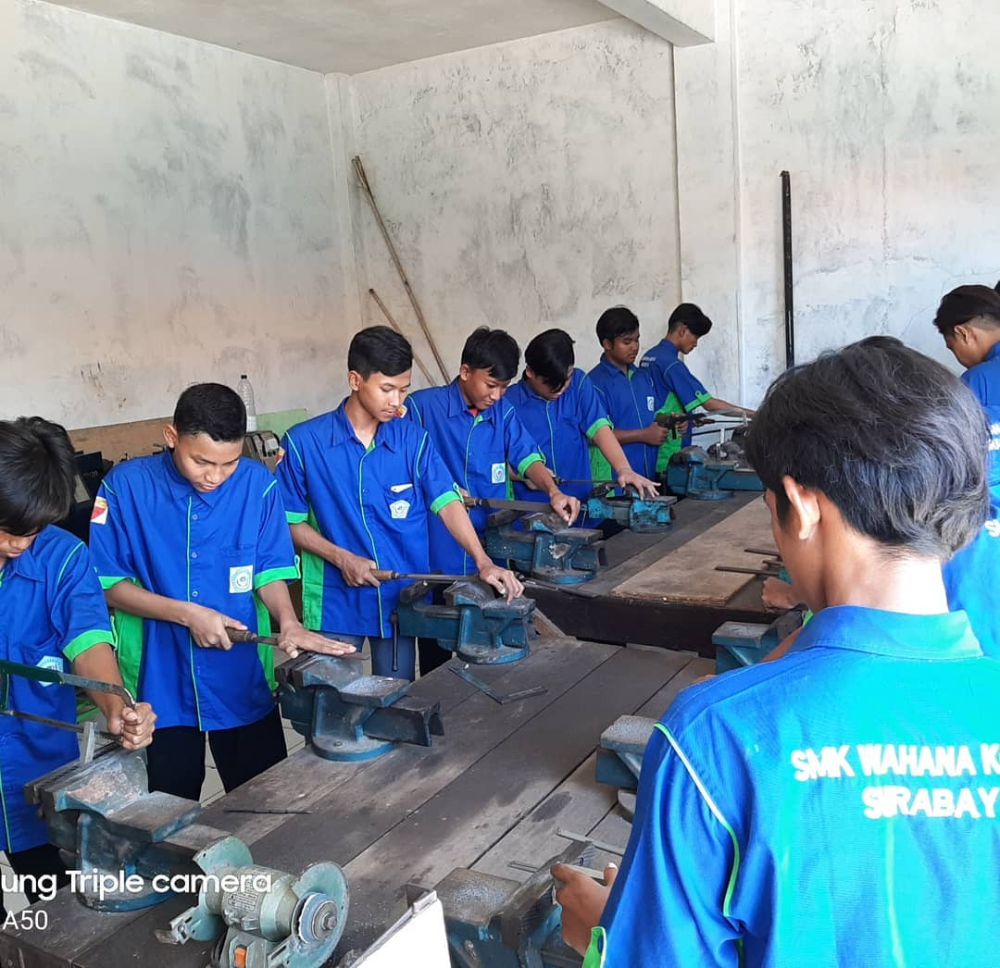

Teknik Pemesinan

Teknik Pemesinan
Jurusan Teknik Pemesinan (TPM) fokus pada pengembangan keterampilan teknik manufaktur dan pengoperasian mesin industri. Siswa dilatih menguasai mesin bubut, milling, hingga teknologi CNC dengan akurasi tinggi.
Mencetak tenaga teknisi yang kompeten, disiplin, dan siap kerja di sektor manufaktur global. Pembelajaran praktik di bengkel dengan peralatan standar industri dan pengajaran dari guru bersertifikat.
Daftar Jurusan TPMBidang keahlian yang akan dikuasai
Operasi Mesin Bubut
Mengoperasikan mesin bubut konvensional untuk pembuatan komponen presisi sesuai gambar teknik.
Operasi Milling
Pengoperasian mesin frais (milling) untuk pembuatan produk dengan permukaan dan profil kompleks.
Teknologi CNC
Pemrograman dan operasi mesin CNC (Computer Numerical Control) untuk produksi massal berakurasi tinggi.
Gambar Teknik & Pengukuran
Membaca gambar teknik, menggunakan alat ukur presisi (caliper, micrometer), dan kontrol kualitas.
Prospek Karir Lulusan TPM
Operator CNC
Teknisi Manufaktur
Quality Control
Production Engineer